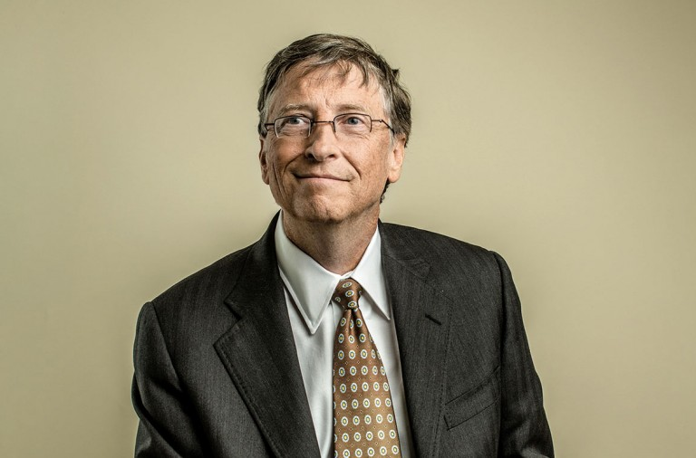

Vida sadsd sadasdsadasdsadsads
Willian Henry Gates, nacido en Seatle el 28 de octubre de 1995, es un empresario informático conocido por crear, junto a Paul Allen, Microsoft. Igualmente es conocido por haber creado también junto a Paul Allen, el sistema opertativo Windows. En 2019 contaba con una fortuna de 96.6 mil millones de dolares, lo que le convertía en el cuarto hombre mas rico del mundo.
Aportaciones a la Informática
Bill Gates crea el 4 de abril de 1975, cuando se encontraba en la universidad de Harvard, la empresa de software Microsoft. Esta se crea tras la creación por parte de Bill Gates, de Altair 8800, un microordenador basado en la CPU Intel 8080. En 1976 abandona finalmente la universidad y pacta con una empresa la cesión del 50% del lenguaje Basic.
En 1979 lanza su primer sistema opertativo, Unix, adquirido de AT&T a través de una licencia de distribución y al cual apodaron Xenix. En 1980 compra los derechos de QDOS a Tim Paterson el cual vendería el canon de cada copia a IBM como MSDOS. En 1985 Microsoft lanza al mercado la primera versión de Windows, para ser la competencia del sistema operativo de Apple.
Sonido de Inicio Windows Xp
Sonido de ejemplo de Incio de Windows Xp:
Video sobre Windows
Video sobre Windows Xp crasheando: